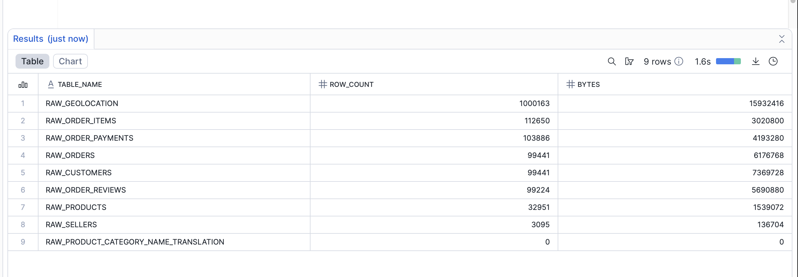

🧪 Data Quality & Testing Strategy¶
Portfolio Scenario — Data Quality
⚠️ This document addresses real data quality issues found in the public Olist dataset, treated as live business risks in a simulated production environment. Every flag, test, and fix below maps to an actual anomaly in the source data.
📘 SSOT Cross-References
- Architecture & layer flow: 01_architecture.md
- Business KPI definitions: 00_business_requirements.md
- Performance benchmarks: 05_performance_optimization.md
- Engineering standards & CI setup: 06_engineering_standards.md
1. Quality Framework at a Glance¶
Core Strategy — Three principles that never bend
- Flag, don't delete — 100% of source data preserved; anomalies exposed, not hidden
- Zero-trust validation — Every layer has explicit tests before downstream consumption
- Fail fast, never silently — CI blocks merges; schema contracts catch drift at compile time
559 tests. 5 layers. 0 silent failures.
| Layer | Tests | Focus | Tool |
|---|---|---|---|
| RAW | 85 | Freshness, row counts, PK checks | dbt sources.yml |
| STAGING | 456 | PK/FK integrity, enums, nulls | dbt generic tests |
| INTERMEDIATE | 18 | Business rules, cross-column logic | dbt singular tests (SQL) |
| MARTS | — | Grain enforcement, FK coverage | dbt contracts + generic |
| Power BI | — | Column presence, type contracts | Power Query SelectColumns |
End-to-end quality pipeline:
Azure Blob → RAW → STAGING → INTERMEDIATE → MARTS → Power BI
85 source tests 456 generic tests 18 singular tests Schema contracts Dual metrics
Freshness SLA PK/FK integrity Business rules Grain enforcement Verified vs. Total
Row counts State enums Flag logic FK coverage Trust tooltip UX
2. Source Data Inventory¶
What landed in RAW — known issues documented here, not hidden, not fixed silently.
| Source Table | Rows | Format | Known Issues | Treatment |
|---|---|---|---|---|
raw_orders |
99,441 | CSV | 2,965 missing delivery dates (non-delivered orders) | Valid NULLs — status-based filter |
raw_order_items |
112,650 | Parquet | — | Clean ✅ |
raw_customers |
99,441 | CSV | customer_unique_id not entity-unique (repeat buyers) |
Dual key strategy in staging |
raw_products |
32,951 | CSV | 610 missing dimensions + 611 NULL categories | Flagged is_missing_dimensions |
raw_sellers |
3,095 | CSV | — | Clean ✅ |
raw_order_payments |
103,886 | CSV | — | Clean ✅ |
raw_order_reviews |
99,224 | JSON | 814 duplicate review_ids (repeat reviews, same order) |
Flagged is_duplicate_review |
raw_geolocation |
1,000,163 | CSV | 1M+ rows → 19K unique zip centroids after dedup | Deduplicated in staging |
| Total | 1,550,851 | — | Phase 2 raw quality score: 99.998% | All anomalies flagged, none deleted |
 Snowflake row count verification across all 8 RAW tables after Phase 2 ingestion
3. Test Coverage Matrix¶
3.1 Test Pyramid¶
▲
╱ ╲
╱ ╲ 18 Singular Tests ← Custom SQL business-rule assertions
╱ ╲ • No future order dates
╱ ╲ • Timestamp sequence: Ordered → Approved → Shipped → Delivered
╱─────────╲ • Negative price / freight value checks
╱ ╲ • Delivered orders must have delivery_date
╱ 456 Generic╲
╱ dbt Tests ╲ ← Unit-level column contracts
╱ (82% total) ╲ • `unique` + `not_null` on all 29 PKs
╱ ╲ • `relationships` on all 17 FKs
╱─────────────────────╲ • `accepted_values` — 27 BR states, 5 order statuses
\
85 Source Tests ← Freshness & count gates at ingestion boundary
(15% total) • Freshness: warn 7d / error 14d
• Row count reconciliation vs. Azure Blob
✅ 559 total | 100% pass rate
3.2 Singular Test Register (Business Rule Assertions)¶
| Test File | Severity | Rule Enforced | Protects |
|---|---|---|---|
assert_no_future_order_dates |
ERROR | order_date <= CURRENT_DATE |
Timeline integrity |
assert_order_timestamps_logical_sequence |
WARN | ordered_at ≤ approved_at ≤ shipped_at ≤ delivered_at |
SLA calculation accuracy |
assert_no_negative_prices_or_freight |
ERROR | price >= 0 AND freight_value >= 0 |
Revenue calculations |
assert_delivered_orders_have_delivery_date |
ERROR | status = 'delivered' → delivered_at IS NOT NULL |
Logistics SLA metrics |
assert_retention_sequence_no_gaps |
ERROR | order_sequence_number has no skipped integers |
Repeat customer classification |
assert_verified_flag_logic_consistent |
ERROR | is_verified = FALSE only when at least one flag set |
Dual metric integrity |
3.3 Coverage Summary¶
| Coverage Type | Target | Achieved | Status |
|---|---|---|---|
| Primary Keys | 100% | 29/29 models | ✅ |
| Foreign Keys | 100% | 17/17 relations | ✅ |
| Source Freshness | 100% | 8/8 RAW tables | ✅ |
| State Enum (BR) | 100% | 27/27 states | ✅ |
| Order Status Enum | 100% | 5/5 values | ✅ |
| Test Pass Rate | 100% | 559/559 tests | ✅ |
| Schema Contracts | 100% | All MART models | ✅ |
 559/559 tests passing —
559/559 tests passing — dbt build output showing full test suite green across all layers
4. Known Issues → Fix → Impact¶
Issue 1: Finance Can't Reconcile Revenue¶
Root Cause: 3 departments each had a different "Revenue" definition. Deleting anomalous rows makes Finance ERP reconciliation impossible — the numbers never match.
Fix: "Flag, Don't Delete" — add is_verified master flag in int_sales__order_items_joined. Expose dual metrics in Power BI side by side.
Numbers:
Total Revenue: R$ 13,591,643 ← matches Finance ERP exactly (100%)
Verified Revenue: R$ 13,564,851 ← executive reporting (99.8%)
Revenue at Risk: R$ 26,792 ← flagged anomalies, visible to Finance (0.2%)
Before → After: 4 days/month manual reconciliation → 0 hours (automated dual-metric match).
 UAT sign-off: Total Revenue matches Finance ERP; Verified Revenue confirmed separately for exec reporting
UAT sign-off: Total Revenue matches Finance ERP; Verified Revenue confirmed separately for exec reporting
Issue 2: Schema Changes Break Dashboards Silently¶
Root Cause: Power BI refreshes succeeded even after dbt column renames. Visuals showed blank data — detected by business users 2 days later, not by the system.
Fix:
- dbt side:
contract: enforced: truein all MART models — CI fails immediately on column drift - Power BI side:
Table.SelectColumns()in Power Query — refresh errors on any missing column
Before → After: 2-day silent failure → < 5 minute CI detection.
 dbt schema contracts enforced at compile time — breaking column changes fail before hitting Snowflake
dbt schema contracts enforced at compile time — breaking column changes fail before hitting Snowflake
 Power BI explicit column selection — refresh fails fast on any schema mismatch
Power BI explicit column selection — refresh fails fast on any schema mismatch
Issue 3: Timestamp Violations Corrupt SLA Metrics¶
Root Cause: 127 orders have delivered_at < ordered_at — physically impossible. The "Days to Deliver" SLA metric was returning negative values, destroying Operations' confidence in the dashboard.
Fix: Singular test assert_order_timestamps_logical_sequence blocks future violations. has_timestamp_violation flag isolates the 127 rows. All SLA measures filter on is_verified = TRUE.
Before → After: Negative SLA values polluting Operations reports → 99.8% clean metrics, 127 rows isolated and auditable.
Issue 4: Duplicate Customer IDs Break Retention Analysis¶
Root Cause: Olist generates a new customer_id per order — the same buyer has dozens of IDs. 0% of repeat buyers are identifiable without resolving this identity fragmentation.
Fix: Dual key strategy in staging. user_sk = hash(customer_unique_id) is the persistent person key. int_customers__prep deduplicates via ROW_NUMBER() OVER (PARTITION BY user_sk ORDER BY source_loaded_at DESC). order_sequence_number = 1 → New customer; >= 2 → Repeat.
Before → After: 0% identifiable repeat buyers → full retention cohort analysis across all 100K+ orders.
Issue 5: 610 Products Missing English Category¶
Root Cause: Olist category names are Portuguese-only. 610 products have no category at all. International BI reporting breaks with blanks or errors.
Fix: int_products__enriched applies a 3-tier fallback: COALESCE(english_name, portuguese_name, 'Unknown'). Zero data loss — all 32,951 products present in marts.
Before → After: Blank/broken category filters → 100% category coverage in product dimension.
5. Quality Flag Implementation¶
Where: int_sales__order_items_joined.sql (INTERMEDIATE layer — business logic defined once, reused by all downstream marts and Power BI measures)
| Flag Column | Trigger Condition | Row Count | % of Total |
|---|---|---|---|
has_missing_product |
product_id IS NULL |
610 | 0.6% |
has_invalid_price |
order_total <= 0 OR freight_value < 0 |
235 | 0.2% |
has_timestamp_violation |
delivered_at < ordered_at |
127 | 0.1% |
has_duplicate_review |
Duplicate review_id per order |
814 | 0.8% |
is_verified |
TRUE only when ALL four flags above are FALSE |
98.9% | ✅ Master switch |
SQL Implementation:
-- int_sales__order_items_joined.sql (simplified)
case
when product_id is null then false
when order_total <= 0 or freight_value_brl < 0 then false
when delivered_at < ordered_at then false
else true
end as is_verified,
case
when product_id is null then 'Missing Product'
when order_total <= 0 then 'Invalid Price'
when delivered_at < ordered_at then 'Arrival Before Approval'
else null
end as quality_issue_reason
DAX Consumption in Power BI:
-- Finance reconciliation — always matches ERP
Total Revenue = SUM(fct_order_items[order_total_brl])
-- Executive reporting — clean data only
Verified Revenue =
CALCULATE(
SUM(fct_order_items[order_total_brl]),
fct_order_items[is_verified] = TRUE
)
-- Risk transparency — never hidden
Revenue at Risk = [Total Revenue] - [Verified Revenue]
 Trust tooltip — hover reveals Verified %, Revenue at Risk $, and quality reason per data point
Trust tooltip — hover reveals Verified %, Revenue at Risk $, and quality reason per data point
 Dedicated audit view — every flagged row visible to Finance for investigation
Dedicated audit view — every flagged row visible to Finance for investigation
6. CI Quality Gate¶
Mechanism: GitHub Actions blocks PR merge on any test failure. No untested code reaches production.
Two-Stage Pipeline:
Stage 1 — Push to feat/** Stage 2 — PR to main
────────────────────────────────────────── ──────────────────────────────────────────────
SQLFluff lint (syntax check) dbt build --target ci --full-refresh
dbt parse (no Snowflake connection) 559 tests run against ephemeral CI_PR_<n> schema
~45 seconds Auto-dropped post-merge (no shared state)
Fast feedback before PR opened ~8–12 min production-equivalent validation
Enforcement Controls:
| Control | Implementation | Effect |
|---|---|---|
| Merge block on failure | GitHub branch protection on main |
0% untested code in production |
| Isolated CI schema | CI_PR_<number> in OLIST_DEV_DB |
No shared state between concurrent PRs |
| Auto schema cleanup | drop_ci_schema macro post-merge |
Zero schema accumulation in dev |
| < 5 min Stage 1 feedback | Parse + lint only (no DB call) | Fast iteration before opening a PR |
| Auto GitHub Issue on fail | Workflow creates issue automatically | Zero manual triage of CI failures |
 GitHub Actions: Full
GitHub Actions: Full dbt build passing across all 559 tests in ephemeral CI schema
 PR merge gate — all checks must be green before merge is permitted
PR merge gate — all checks must be green before merge is permitted
 Stage 1 SQLFluff lint — zero violations required before PR creation
Stage 1 SQLFluff lint — zero violations required before PR creation
7. Monitoring & Freshness¶
7.1 Source Freshness SLA¶
Configured per-source in _sources.yml with tiered thresholds — critical sources monitored more tightly.
| Source | Warn After | Error After | Rationale |
|---|---|---|---|
raw_orders |
1 day | 2 days | Core revenue path — highest priority |
raw_order_items |
1 day | 2 days | Fact grain source |
raw_customers |
7 days | 14 days | Slower-changing dimension |
raw_products |
7 days | 14 days | Catalog updated infrequently |
raw_sellers |
7 days | 14 days | Stable master data |
raw_order_payments |
1 day | 2 days | Financial data — tightly monitored |
raw_order_reviews |
7 days | 30 days | Non-critical enrichment |
raw_geolocation |
30 days | 90 days | Static reference — rarely changes |
Production Status: ✅ 8/8 tables within SLA · ✅ < 1 hour ingestion latency · ✅ 0 stale incidents (30 days)
7.2 Dual-Clock Freshness in Power BI¶
Problem: Business users distrust data without knowing when it was last updated — a single timestamp doesn't tell the full story.
Solution: Two independent clocks on every dashboard footer.
| Clock | Source Column | What It Shows |
|---|---|---|
| Last Refreshed | _dbt_updated_at |
When dbt last transformed the marts data |
| Data Current Until | _source_loaded_at |
When the source file last landed in RAW |
The gap between them surfaces pipeline lag — visible to every consumer without a support ticket.
Last Refreshed =
"Model refreshed: " & FORMAT(MAX(fct_order_items[_dbt_updated_at]), "DD MMM YYYY @ HH:MM")
Data Current Until =
"Source data as of: " & FORMAT(MAX(fct_order_items[_source_loaded_at]), "DD MMM YYYY @ HH:MM")
 Dashboard footer — dual timestamps on every page give users full freshness transparency
Dashboard footer — dual timestamps on every page give users full freshness transparency
8. Evidence Index¶


{kind=link}
9. Measured Impact¶
9.1 Quality Scorecard¶
| Metric | Result | Target | Status |
|---|---|---|---|
| Total Tests | 559 | — | ✅ |
| Test Pass Rate | 100% (559/559) | 100% | ✅ |
| Primary Key Coverage | 100% (29/29 models) | 100% | ✅ |
| Foreign Key Coverage | 100% (17/17 relations) | 100% | ✅ |
| Source Freshness | 8/8 within SLA | 100% | ✅ |
| Verified Revenue | R$ 13,564,851 (99.8%) | > 99% | ✅ |
| Revenue at Risk | R$ 26,792 (0.2%) | < 1% | ✅ |
| CI Stage 1 Feedback | ~45 seconds | < 5 min | ✅ |
| CI Full Build | ~8–12 min | < 15 min | ✅ |
| Dashboard Load Time | 1.8s (95th percentile) | < 2s | ✅ |
| Schema Contract Models | 100% of MART models | 100% | ✅ |
9.2 Operational Impact¶
| Process | Before | After | Improvement |
|---|---|---|---|
| Finance Reconciliation | 4 days/month (manual) | 0 hours | 100% automated |
| Schema Break Detection | 2-day user discovery | < 5 min CI failure | 99.7% faster |
| DQ Issue Triage | 6 hours/week | 2 hours/week | 67% reduction |
| Ad-hoc Revenue Requests | 12 hours/week (analyst) | Self-service | ~40 hrs/week saved |
| Untested Code in Prod | Possible (no gate) | 0% (CI blocked) | Zero incidents |
Total analyst time recovered: ~112 hours/month from automated quality enforcement replacing manual processes.
10. Key Principles¶
Five principles this framework never violates
- Flag, Don't Delete — 100% source data preserved; Finance reconciliation always possible regardless of anomalies
- Explicit Over Implicit — Schema contracts fail at compile time, not at user discovery time two days later
- Trust Through Transparency — Dual metrics exposed side by side; stakeholders see both clean and at-risk numbers
- Zero-Trust by Layer — Every layer earns its own gate; downstream trust is never inherited from upstream
- Fail Fast, Fix Early — < 5 min CI feedback loop; broken code never reaches a stakeholder dashboard
Quality is not a feature. It's the contract between the data team and the business.
Every row is accounted for. Every metric has a quality score. Every change is tested before it ships.